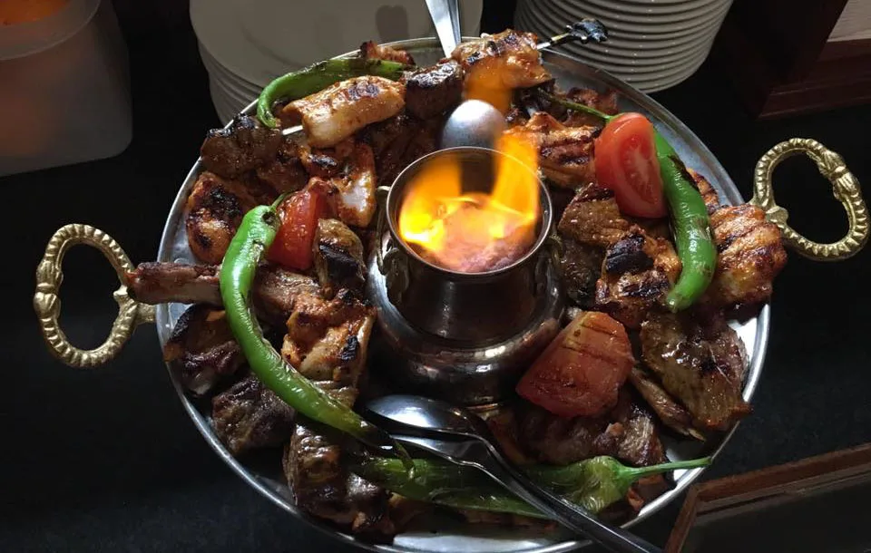
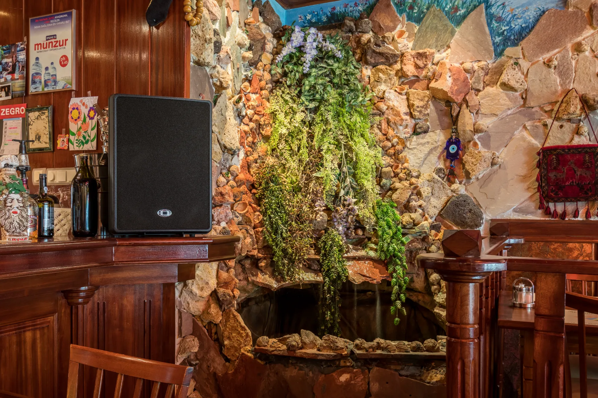
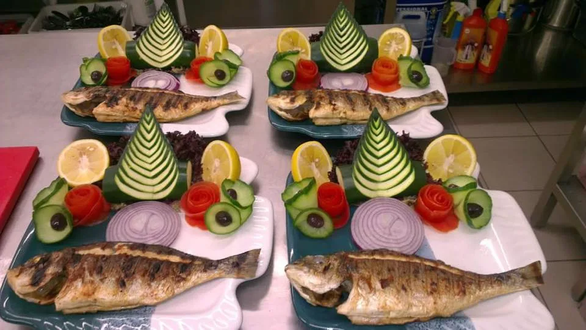
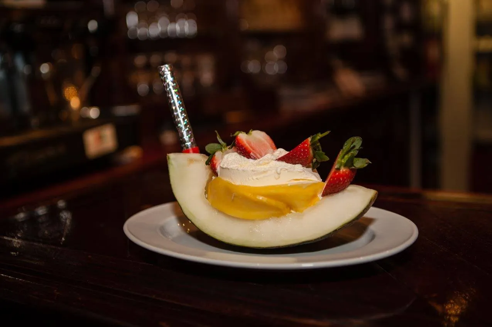
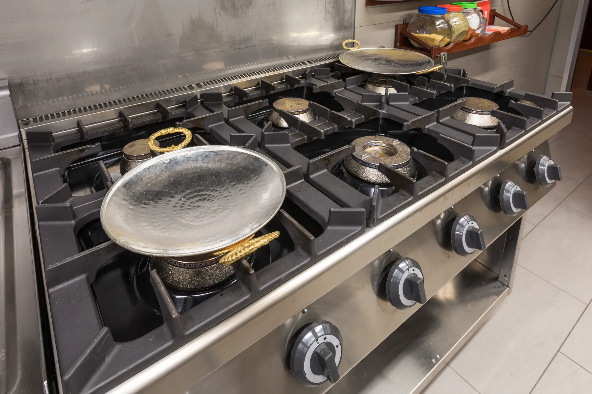
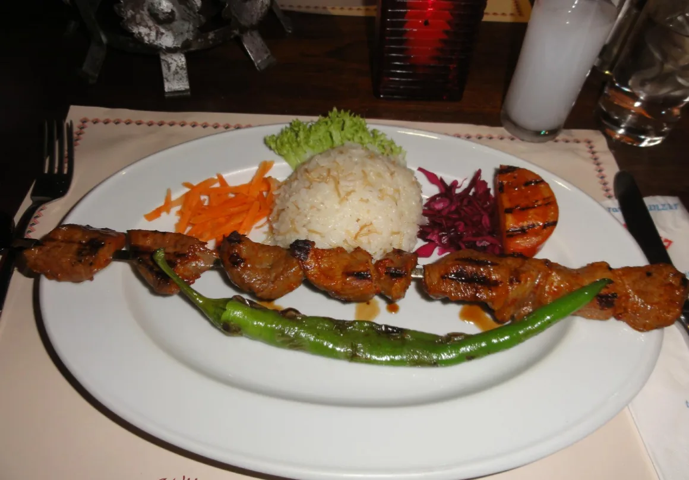
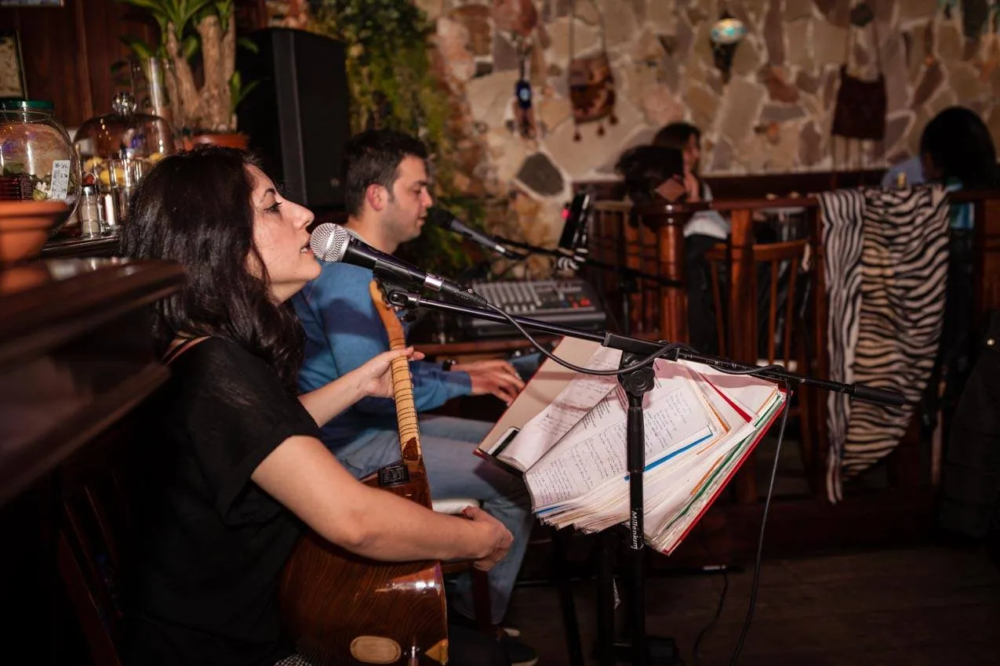
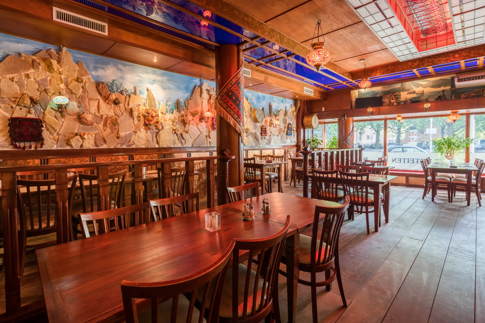

Restaurant Munzur
De lekkerste Turkse gerechten, aan de Schiekade in Rotterdam. Mezzes, de grill en de gulle gastvrijheid van Anatolië: dagelijks vanaf 17:00 uur.
Open
Zondag t/m donderdag 17:00–23:00
Vrijdag en zaterdag 17:00–01:00
Adres
Schiekade 131
3033 BL Rotterdam
Reserveren
010 466 13 30
Bel ons, we zetten een tafel voor u klaar.
Eten uit Anatolië is een feest voor iedereen aan tafel
Restaurant Munzur is een Turks restaurant in Rotterdam. U kunt hier dagelijks vanaf 17:00 uur heerlijk eten en drinken.
De rijke geschiedenis van Turkije drukte haar stempel op de Turkse keuken. Kenmerkend zijn het traditioneel op houtskool geroosterde vlees, salades van de meest verse groenten, karnemelk en zelfgebakken durum, het streekbrood.
In Anatolië is eten een sociaal gebeuren: bij suikerfeesten, offerfeesten, geboortes en besnijdenisfeesten schuift iedereen aan. De specifieke gerechten en de universele, gulle gastvrijheid van Anatolië vindt u bij Restaurant Munzur terug.
Naar de menukaart
Binnen bij Munzur
Warm hout, Turkse lampen en een wand van natuursteen. Kom binnen aan de Schiekade.







Feesten en partijen
Wij zorgen ook voor uw feesten en partijen. Munzur verzorgt catering: neem gerust contact met ons op voor een afspraak en een gratis offerte.
Kom langs aan de Schiekade
Openingstijden
| Zondag t/m donderdag | 17:00–23:00 |
|---|---|
| Vrijdag en zaterdag | 17:00–01:00 |
- Adres
- Restaurant Munzur
Schiekade 131
3033 BL Rotterdam - Reserveren
- 010 466 13 30
- Mobiel
- 06 22 54 87 81
- info@munzur.nl
- Volg ons